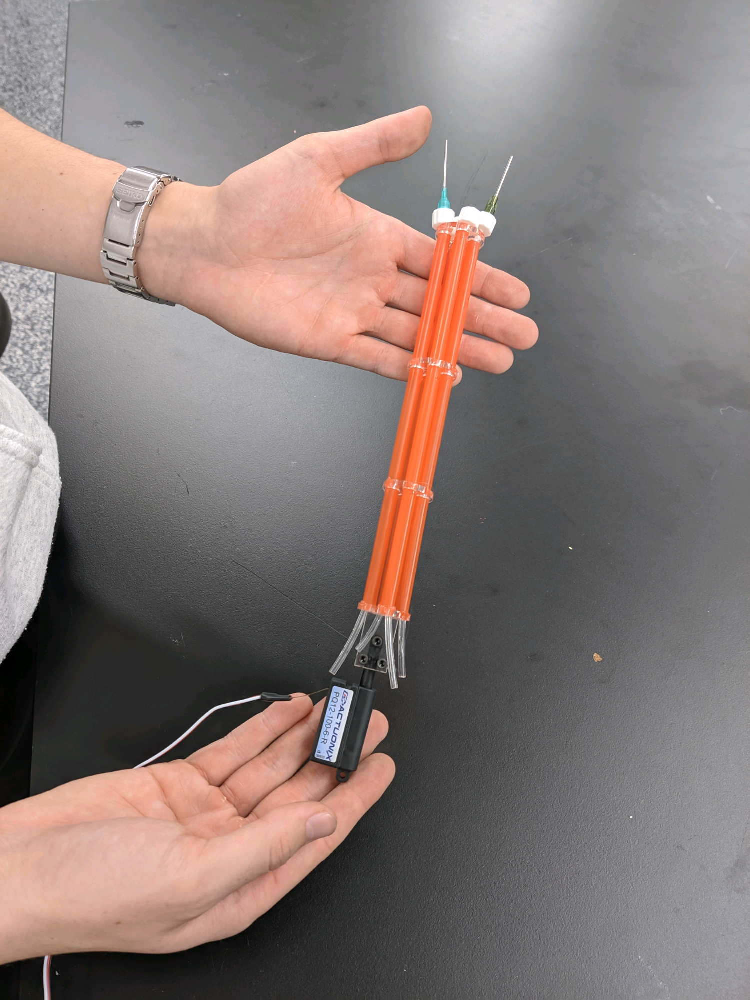

Team GECCO (short for Gel Ethanol Cervical Cancer Obliterator) is a team of Duke undergraduate engineers working in collaboration with Duke postdoc researcher Dr. Jenna Mueller to develop a low-cost electromechanical device for the ablation of cervical cancer.
The project started when Dr. Mueller discovered, in the course of her studies, that a solution of ethanol and ethylcellulose is a very effective ablative agent. Upon injecting it into cancerous regions, it reacts with water in cervical tissue and forms a viscous gel. This unique property allows the solution to maintain its position in the cancerous area while the ethanol in the solution kills the surrounding cells. However, using this solution as an effective treatment requires two things: an accurate needle insertion method and a very, very slow injection flow rate.
Our team's goal is to design and build a self-contained, portable device that can be used in a clinical study to evaluate the efficacy of the treatment.
We began research and development at the beginning of the semester, starting with an exhaustive dive into the background of the problem, including basic domain knowledge, standards and regulations, and existing analogous solutions. We met with an OB-GYN and a professional R&D engineer for guidance during this process.
After conducting research, we established design criteria and brainstormed solution ideas, then used numerical evaluation techniques to decide between design options. The design we decided on uses a micro linear actuator to insert an array of four small needles in a circle around the os (the cervical opening) and a mini stepper motor with a custom lead screw to very slowly push a syringe containing the gel ethanol. The entire assembly is contained in a biocompatible plastic shell with an internal power supply.
At this point in the process, our team has sourced materials and built low-fidelity prototypes of both the insertion and injection mechanisms. We have achieved the necessary rates for each operation, proving our concept and paving the way for future advances. See some pictures of the low-fidelity models below!
A first prototype of the syringe pushing mechanism, with a large stepper motor, to be downsized in future prototypes.

The syringe pushing mechanism in action, sped up to about 70x working speed.
A first prototype of the needle array and insertion mechanism, with linear actuator attached.